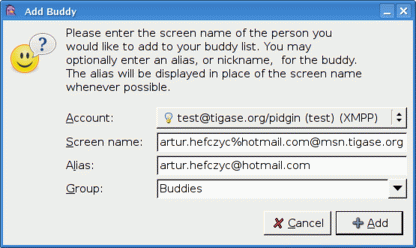
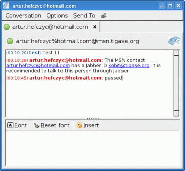

As I mentioned earlier, Pidgin doesn’t support all Jabber extensions needed for registering to MSN transport. So unfortunately you have to use a different client to add this transport to your roster. Ideally you should use one of the native Jabber stand-alone clients like Psi, or Coccinella. However, If you don’t want to install any other clients you can use Jeti which is available on Tigase website preinstalled and preconfigured for use. Please refer to separate guide for details on how to use Jeti client to get MSN transport working.
Ok, now as you probably have MSN transport activated for you account you can start using Pidgin to communicate with either Jabber users or MSN users.
First thing to do is basic Pidgin configuration to connect to your Jabber account on tigase.org server. Click Accounts in your main menu and then Add/Edit to get to the window with all your accounts listing. There is a button Add. After you press it you get to a window as below.

Please enter all your login details as on the example screenshot. Your user name, Screen name, and Password will be different but Domain should be the same: tigase.org. After you fill in all fields don’t press Register. You have to press Save.
Ok. Assuming everything was enterred correctly and you have configured Pidgin to login automatically, your main window should look like the one on the left hand side. Your buddy list might be empty if you didn’t add anybody to your list yet or, if you didn’t register to MSN transport yet.
If MSN transport is not activated yet, please disconnect Pidgin from tigase.org server and use a different client as described above.
On the other hand if you did everything already, and you have an old MSN account with lots of contacts, your buddy list may look completely different as all the contacts you have will be automatically pulled into your Jabber roster and should show on the list.
I have created a completely new MSN account for the purpose of writing this guide and I don’t have any MSN contacts yet. So my list is quite simple - a single Jabber contact and MSN transport which shows as a normal contact. Remember Pidgin can’t distinguish between transports and regular accounts.
In such a case one of the first things I should do is add a new MSN contact to be able to communicate with somebody and see whether he/she is on-line or not.
Adding new contact is simple as long as Pidgin thinks it is normal Jabber contact. So we cannot actually enter: user_name@hotmail.com in the Add buddy window because this is a Hotmail account which is not directly available. After the @ character you have to put a valid Jabber domain, not MSN.
If you look at the image below it should become clear now.

The whole MSN account address is a user name for Jabber identifier purposes and you have to replace @ with %. Then you add @ and MSN transport address. As an alias you can use anything. I have used a real Hotmail address to make it easier later on to see what the account is.
Enter everything carefuly and press Add.
After you press the Add button the contact you are adding should receive a subscription request as well receiving a subscription request yourself. The Pidgin window should look similar to the example below.
Of course you need to press the Authorize button on both sides (or your mate on MSN network accepts your subscription request) and now the final window should look like the one below. The new buddy is on your list and you can click on his/her name and start chatting.

One final funny discovery I made during writing this guide.
I have created a new MSN account just for my tests and I have also used my old MSN account for subscribing and adding the account to buddy list on both sides. Moreover, I access both MSN accounts through MSN transport and in my tests I was communicating from one Jabber client (Psi) through MSN gateway to the MSN server and back through my MSN gateway back to other Jabber client (Pidgin) to the other account.
Apparently MSN transport spotted this and knowing how silly such a use case this is, sends me one extra message to my chat window. Have a look at the last screenshot and have fun. Remember to not communicate between 2 Jabber accounts using your 2 MSN accounts as this might be discovered by the smart, open source software.
